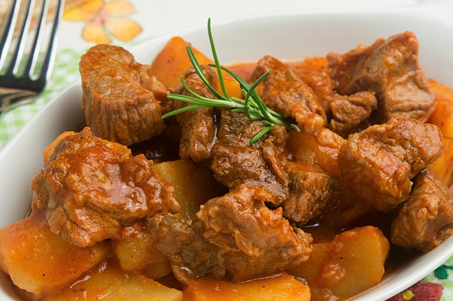

Ingredientes
2 colheres (sopa) de azeite
1 peça de maminha (cerca de 1 quilo)
2 xícaras (chá) de água
4 cebolas grandes fatiadas
1 xícara (chá) de batatas-bolinha
4 sticks de MAGGI® Meu Segredo Cheiro Verde
2 colheres (sopa) de cheiro-verde

Modo de Preparo
1.
Em uma panela de pressão, aqueça o azeite o doure a carne de todos os lados.
2.
Acrescente a água e os sticks de MAGGI Meu Segredo Cheiro Verde. Tampe a panela e deixe cozinhar por cerca de 45 minutos após pegar a pressão.
3.
Retire a pressão, abra a panela cuidadosamente e acrescente as cebolas e as batatas e deixe cozinhar por mais 15 minutos, após pegar pressão.
4.
Após o tempo sugerido de cozimento, retire a pressão novamente, abra a panela cuidadosamente e verifique se a carne está macia, se necessitar de mais cozimento, veja se é preciso acrescentar mais água quente.
5.
Sirva a maminha fatiada com o molho que se forma durante o cozimento